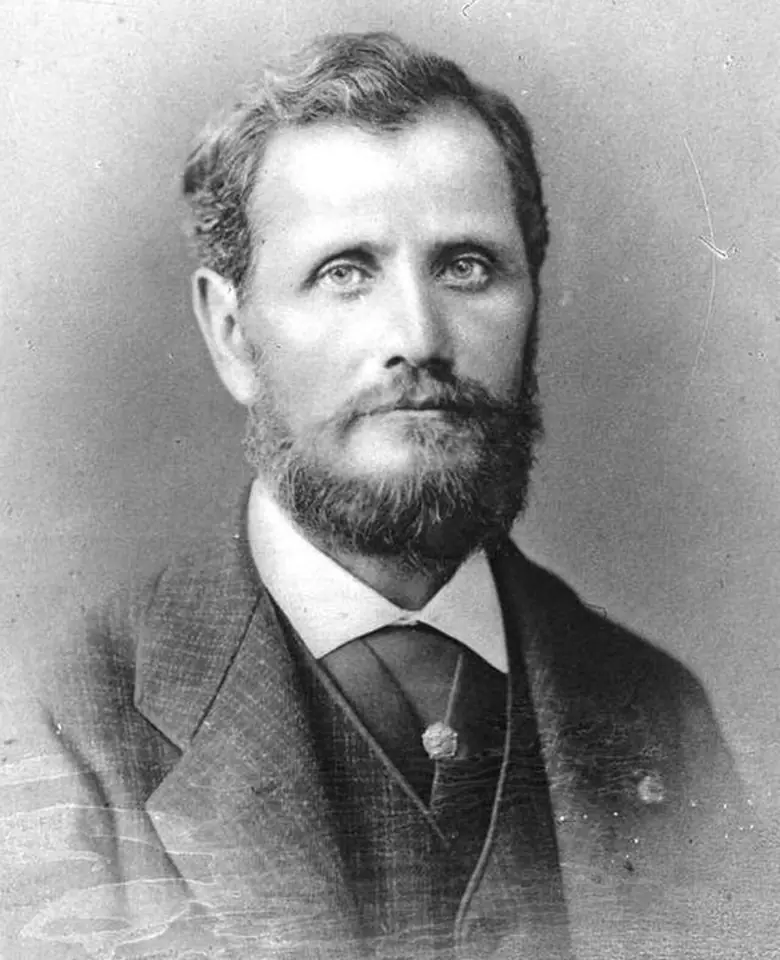

Padişahın Hizmetindeki Polonyalılar
Millî Saraylar Resim Müzesi – Chlebowski'nin tabloları
Polonyalı bir ressam on iki yıl boyunca Sultan Abdülaziz için, çoğu zaman padişahın kendi eskizlerinden yola çıkarak çalıştı; yaptığı padişah portreleri bu müzenin koleksiyonunda.


- Semt
- Beşiktaş
- Dönem
- 1864–1876
- Ziyaret
- Ziyarete açık
Hikâye
Sultan Abdülaziz tuvalde görmek istediği savaşların eskizlerini kendisi çizerdi; onları resmeden ise Polonyalı Stanisław Chlebowski'ydi.
1835'te Podolya'da doğan, Petersburg'da ve Paris'te Jean-Léon Gérôme'un yanında eğitim gören Chlebowski, 1864 sonunda İstanbul'a geldi. Bazı araştırmacılara göre saray kapısını ona Michał Czajkowski, yani Sadık Paşa açtı. 1865 baharında padişah için yaptığı Osmanlı tarihi konulu dört tablosu Galatasaray Kışlası'nda sekiz gün boyunca halka gösterildi. Kendisi de amatör bir ressam olan Abdülaziz 1870'te onu Mâbeyn-i Hümâyûn ressamı yaptı. Chlebowski bu görevde resmen 1872'ye kadar kaldı, ama padişah için 1876'ya dek çalışmayı sürdürdü.
Abdülaziz kompozisyonları kâğıda çizerdi; Krakov'da, padişahın kırmızı mürekkeple düzeltmeler yaptığı Chlebowski eskizleri korunuyor. Ressam Mehmed Sami duyduğu bir hikâyeyi aktarır: padişah bir tablodaki çizgileri düzeltince gücenen Polonyalı şikâyet etmek istemiş, ama düzeltmelerin doğru olduğunu görmüş. Chlebowski, ailesine yazdığı mektuplarda durmadan at ve savaş resmi yapmaktan yakınıyor, saray hayatını hapse benzetiyordu; Osmanlı kayıtları ise her tablo için aldığı ihsanların diğer saray ressamlarınınkinin aşağı yukarı iki katı olduğunu gösteriyor.
Dolmabahçe'nin eski Veliaht Dairesi'ndeki Millî Saraylar Resim Müzesi'nin koleksiyonunda Chlebowski'ye atfedilen on altı tablo var. Müzenin sorumlu küratörüne göre burada sergilenenler arasında Abdülaziz'in 1867 tarihli boy portresi (padişah Beylerbeyi Sarayı bahçesindeki havuzun başında duruyor, arkada seyis atını getiriyor) ve saray ressamları bölümündeki iki küçük portre yer aldı. Koleksiyonda Abdülaziz'in veliahtlığında çizdiği imzalı bir buharlı gemi resmi de bulunuyor. 1876'da tahttan indirilen padişah kısa süre sonra öldü; Chlebowski Paris'e gitti. Büyük tablosu “Fatih Sultan Mehmed'in İstanbul'a Girişi” bugün Krakov Ulusal Müzesi'nde.



Nasıl gezilir
Müze, Dolmabahçe Sarayı yerleşkesinin Beşiktaş ucundaki eski Veliaht Dairesi'nde. En kolay yol, Taksim'den F1 füniküleriyle Kabataş'a inip saray boyunca 15 dakika kadar yürümek. Bilet ve ziyaret saatlerini millisaraylar.gov.tr'den kontrol edin. Sergi zaman zaman değişiyor: müzenin küratörü 1867 tarihli Abdülaziz portresinin Sultan Abdülmecid ve Sultan Abdülaziz Salonu'nda, iki küçük portrenin de saray ressamları bölümünde sergilendiğini yazmıştı, ama ziyaret gününüzde görebileceğiniz garanti değil; görevlilere Chlebowski'nin tablolarını sorun.
Kişiler
- Stanisław Chlebowski
- Sultan Abdülaziz
- Michał Czajkowski (Sadyk Pasza)
- Mehmed Sami
Konum
Beşiktaş, İstanbul · Koordinatlar: 41.03966, 29.00272